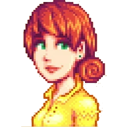
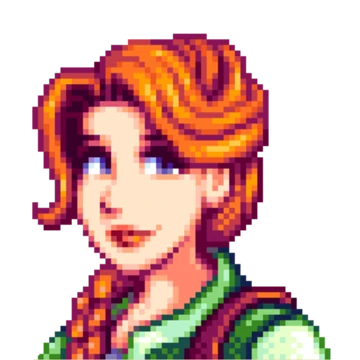

Birthdays and Gifts
| Character | Birthday | Best Gift |
|---|---|---|
| Penny | Fall 2 | Diamond |
| Leah | Winter 23 | Goat Cheese |
| Maru | Summer 10 | Gold Bar |
Characters

Penny
Penny is definitely my favorite character so far! She's very sweet, and extremely caring. Throughout the game, you can see that she has gone through a lot, and I believe that she deserves so much more than she has gotten. She's amazing with Jas and Vincent, and I hope that her life will get better soon.

Leah
Leah is my second-favorite character. She's very kind, creative, and a great person in general. I've always had a liking towards artistic people, and I look up to them, and Leah is exactly that. There are many adorable cutscenes with Leah and your character where she teaches you how to paint, or gives you art that she has made for you.
Maru
Maru is my third-favorite character. She's adorable, shy, and nerdy. Maru is extremely intelligent, she works as a nurse at the town's clinic, has a large interest in science, taking after her dad. She enjoys robotics, astronomy, and helping her father out in his laboratory.